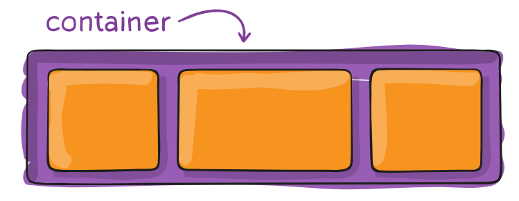
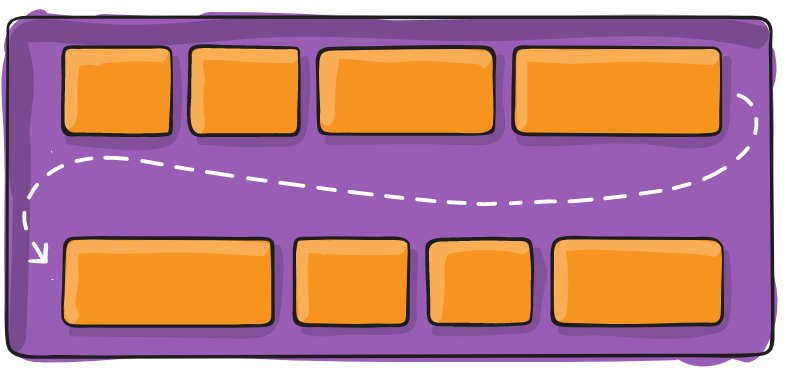
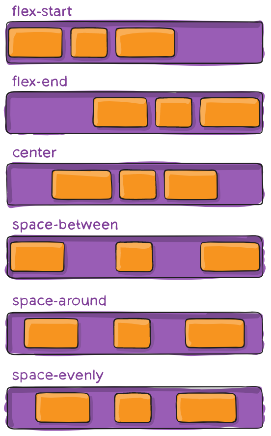
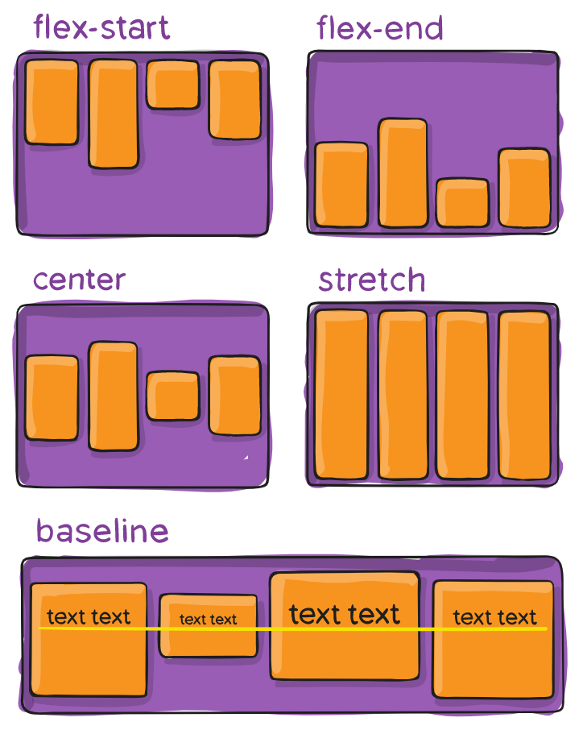
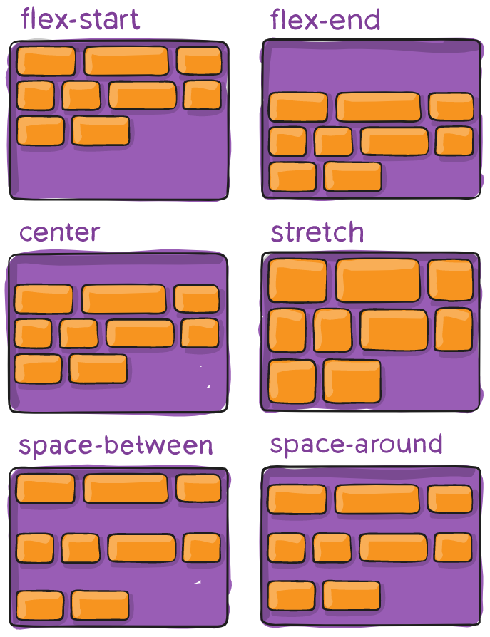
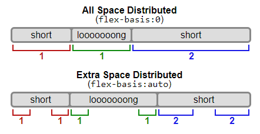

Background
Модуль Flexbox Layout (Flexible Box) (W3C Candidate Recommendation от октября 2017 г.) направлен на обеспечение более эффективного способа размещения, выравнивания и распределения пространства между элементами в контейнере, даже если их размер неизвестен и / или динамичен (Flex значит «гибкий»).
Основная идея flex layout состоит в том, чтобы дать контейнеру возможность изменять ширину / высоту его элементов (и порядок), чтобы наилучшим образом заполнить доступное пространство (главным образом, для отображения на всех типах устройств с любым размером экрана). Flex контейнер расширяет элементы, чтобы заполнить доступное свободное пространство, или сжимает их, чтобы предотвратить переполнение.
Наиболее важно то, что макет flexbox не зависит от направления, в отличие от обычных макетов (block на вертикальной основе и inline на горизонтальной основе). Хотя они хорошо работают для страниц, им не хватает гибкости (без каламбура :-)) для поддержки больших или сложных приложений (особенно когда речь идет об изменении ориентации, изменении размера, растяжении, сжатии и т.д.).
Примечание: Flexbox layout наиболее подходит для компонентов приложения и мелкомасштабных макетов, а Grid layout предназначен для макетов большего масштаба.
Основы и терминология
Поскольку flexbox — это целый модуль, а не одно свойство, он включает в себя множество элементов с набором свойств. Некоторые из них предназначены для установки в контейнере (родительский элемент принято называть «flex контейнер»), в то время как другие предназначены для установки в дочерних элементах (так называемые «flex элементы»).
Если «обычная» компоновка основана как на блочном, так и на inline направлениях, flex layout основана на «направлениях flex-flow». Пожалуйста, посмотрите на этот рисунок из спецификации, объясняющий основную идею гибкого макета.

Элементы будут расположены либо в направлении главной оси (main axis от main-start до main-end) или в направлении поперечной оси (cross axis от cross-start до cross-end).
- main axis — главная ось flex контейнера — это основная ось, вдоль которой располагаются flex элементы. Будьте внимательны, эта ось не обязательна горизонтальная; это зависит от flex-direction свойства.
- main-start | main-end — flex элементы помещаются в контейнер, начиная с main-start и заканчивая main-end.
- main size — ширина или высота flex элемента, в зависимости от того, что находится в основном измерении. Определяется основным размером flex элементов т.е. свойством 'width' или 'height', в зависимости от того, что находится в основном измерении.
- cross axis — ось перпендикулярная главной оси, называется поперечной осью. Её направление зависит от направления главной оси.
- cross-start | cross-end — flex строки заполняются элементами и помещаются в контейнер, начиная от cross-start flex контейнера по направлению к cross-end.
- cross size — ширина или высота flex элемента. В зависимости от css свойства flex-direction, это ширина или высота элемента. Это всегда поперечный размер flex элементов.
Свойства для Родителя (flex контейнер)
display
Определяет flex контейнер; inline или block в зависимости от заданного значения. Включает flex контекст для всех потомков первого уровня.
flex-direction: row | row-reverse | column | column-reverse;
- row (по умолчанию): слева направо в ltr ; справа налево в rtl
- row-reverse справа налево ltr ; слева направо в rtl
- column : так же, как и row но сверху вниз
- column-reverse: то же самое, row-reverse но снизу вверх
flex-wrap
По умолчанию гибкие элементы будут пытаться уместиться на одной строке. Вы можете изменить это и позволить элементам переходить на новую строку по мере необходимости с помощью этого свойства.
flex-wrap: nowrap | wrap | wrap-reverse;
- nowrap (по умолчанию): все flex элементы будут в одной строке
- wrap: flex-элементы будут перенесены на несколько строк сверху вниз.
- wrap-reverse: flex-элементы будут перенесены на несколько строк снизу вверх.
Посмотреть визуальные демоверсии поведения flex-wrap можно здесь.
flex-flow
Применяется к родительскому элементу flex-контейнера. Это сокращение для flex-direction и flex-wrap свойств, которые вместе определяют основные и поперечные оси flex контейнера.
flex-flow: <‘flex-direction’> || <‘flex-wrap’>;
Значением по умолчанию является row nowrap.
justify-content
Это свойство определяет выравнивание вдоль главной оси. Оно помогает распределить дополнительный остаток свободного пространства, когда-либо все flex элементы в строке негибкие, либо гибкие, но достигли своего максимального размера. Это также обеспечивает некоторый контроль над выравниванием элементов, когда они переполняют линию.
justify-content: flex-start | flex-end | center | space-between | space-around | space-evenly | start | end | left | right ... + safe | unsafe;
- flex-start (по умолчанию): элементы сдвинуты в начало flex-direction направления.
- flex-end: элементы сдвинуты ближе к концу flex направления.
- start: элементы сдвинуты к началу writing-mode направления.
- end: элементы сдвинуты в конце writing-mode направления.
- left: элементы сдвинуты по направлению к левому краю контейнера, если это не имеет смысла flex-direction, тогда он ведет себя как start.
- right: элементы сдвинуты по направлению к правому краю контейнера, если это не имеет смысла flex-direction, тогда он ведет себя как start.
- center: элементы центрированы вдоль линии
- space-between: элементы равномерно распределены по линии; первый элемент находится в начале строки, последний элемент в конце строки
- space-around: элементы равномерно распределены по линии с одинаковым пространством вокруг них. Обратите внимание, что визуально пространства не равны, так как все элементы имеют одинаковое пространство с обеих сторон. Первый элемент будет иметь одну единицу пространства напротив края контейнера, но две единицы пространства между следующим элементом, потому что у следующего элемента есть свой собственный интервал, который применяется.
- space-evenly: элементы распределяются таким образом, чтобы расстояние между любыми двумя элементами (и расстояние до краев) было одинаковым.
Обратите внимание, что поддержка браузером этих значений имеет свои нюансы. Например, space-between никогда не получал поддержку Edge, а start / end / left / right еще нет в Chrome. В MDN есть подробные графики. Самые безопасные значения это flex-start, flex-end и center.
Есть также два дополнительных ключевых слова, которые вы можете связать с этими значениями: safe и unsafe. Использование safe гарантирует, что как бы вы ни занимались этим типом позиционирования, вы не сможете расположить элемент таким образом, чтобы он отображался за пределами экрана (например, сверху) так, чтобы содержимое тоже не могло быть прокручено (это называется «потеря данных»).
align-items
Это свойство определяет поведение по умолчанию того, как flex элементы располагаются вдоль поперечной оси на текущей линии. Думайте об этом как о justify-content версии для поперечной оси (перпендикулярной главной оси).
align-items: stretch | flex-start | flex-end | center | baseline | first baseline | last baseline | start | end | self-start | self-end + ... safe | unsafe;
- stretch (по умолчанию): растягивать, чтобы заполнить контейнер (все еще соблюдаются min-width / max-width)
- flex-start / start / self-start: элементы размещаются в начале поперечной оси. Разница между ними невелика и заключается в соблюдении flex-direction правил или writing-mode правил.
- flex-end / end / self-end: элементы располагаются в конце поперечной оси. Разница опять-таки тонкая и заключается в соблюдении flex-direction или writing-mode правил.
- center: элементы центрированы по поперечной оси
- baseline: элементы выровнены, по их базовой линии
safe и unsafe ключевые слова модификаторов могут быть использованы в сочетании со всеми из этих ключевых слов (хотя это поддерживается не всеми браузерами), это помогает предотвратить выравнивание элементов таким образом, что содержание становится недоступным.
align-content
Это свойство выравнивает линии в пределах flex контейнера, когда есть дополнительное пространство на поперечной оси, подобно тому, как justify-content выравнивает отдельные элементы в пределах главной оси.
Примечание: это свойство не действует, когда есть только одна строка flex элементов.
align-content: flex-start | flex-end | center | space-between | space-around | space-evenly | stretch | start | end | baseline | first baseline | last baseline + ... safe | unsafe;
- flex-start / start: элементы, сдвинуты в начало контейнера. Более поддерживаемый flex-start использует, flex-direction в то время как start использует writing-mode направление.
- flex-end / end: элементы, сдвинуты в конец контейнера. Более поддерживаемый flex-end использует flex-direction в то время как end использует writing-mode направление.
- center: элементы выровнены по центру в контейнере
- space-between: элементы равномерно распределены; первая строка находится в начале контейнера, а последняя — в конце
- space-around: элементы равномерно распределены с равным пространством вокруг каждой строки
- space-evenly: элементы распределены равномерно, вокруг них одинаковое пространство
- stretch (по умолчанию): линии растягиваются, чтобы занять оставшееся пространство
safe и unsafe ключевые слова модификаторов могут быть использованы в сочетании со всеми из этих ключевых слов (хотя это поддерживается не всеми браузерами), это помогает предотвратить выравнивание элементов таким образом, что содержание становится недоступным.
Свойства для первых дочерних элементов(flex элементы)

order

Cвойство order определяет порядок, используемый для размещения flex элементов в их flex контейнере. Элементы располагаются в восходящем порядке по значению order.
order: <"integer">; /* default is 0 */
Элементы с одинаковым значением order располагаются в том порядке, в каком они находятся в исходном коде.
flex-grow

Это свойство определяет способность flex элемента растягиваться в случае необходимости. Оно принимает значение от нуля, которое служит пропорцией. Это свойство, какое количество доступного пространства внутри гибкого контейнера должен занимать элемент.
Если для всех элементов flex-grow установлено значение 1, оставшееся пространство в контейнере будет равномерно распределено между всеми дочерними элементами. Если один из дочерних элементов имеет значение 2, этот элемент займет в два раза больше места, чем остальные (или попытается, по крайней мере).
flex-grow: <"number">; /* default 0 */
Отрицательные числа не поддерживаются.
flex-shrink
Это свойство определяет способность гибкого элемента сжиматься при необходимости.
flex-shrink: <"number">; /* default 1 */
Отрицательные числа не поддерживаются.
flex-basis
Это свойство определяет размер элемента по умолчанию перед распределением оставшегося пространства. Это может быть длина (например, 20%, 5rem и т.д.) Или ключевое слово. Ключевое слово auto означает «смотри на мое width или height свойство». Ключевое слово content означает «размер на основе содержимого элемента» — это ключевое слово все еще не очень хорошо поддерживается, так что трудно проверить что для него используется max-content, min-content или fit-content.
flex-basis:
Если установлено значение 0, дополнительное пространство вокруг содержимого не учитывается. Если установлено значение auto, дополнительное пространство распределяется в зависимости от его flex-grow значения.
flex
Это сокращение для использования flex-grow, flex-shrink и flex-basis вместе. Второй и третий параметры (flex-shrink и flex-basis) являются необязательными. По умолчанию это 0 1 auto.
flex: none | [ <'flex-grow'> <'flex-shrink'>? || <'flex-basis'> ]
Обратите внимание что свойства float , clear и vertical-align не влияют на flex элементы.
Поддержка в браузерах
Разбита по «версии» flexbox:
- (new) означает недавний синтаксис из спецификации (например display: flex;)
- (tweener) означает странный неофициальный синтаксис с 2011 года (например display: flexbox;)
- (old) означает старый синтаксис с 2009 года (например display: box;)
Blackberry Browser 10+ поддерживает новый синтаксис.
Для получения дополнительной информации о том, как смешивать синтаксисы, чтобы получить лучшую поддержку браузера, пожалуйста, обратитесь к этой статье (CSS-хитрости) или этой статье (DevOpera).